Digital Design with MLIR and CIRCT
From hardware IRs to application-specific arithmetic
ACM Europe School on MLIR 2026 · A Coruña
INSA Lyon · INRIA, Emeraude
University of Rennes · IRISA · INRIA, Taran
10–14 August 2026
Course outline
$ whoami~5 min- From problems to electron flow quiz ~10 min
- Digital design primer quiz ~25 min
- CIRCT: MLIR toward hardware ~10 min
- CIRCT in practice hands-on: 5 exercises quiz ~45 min
- Let’s multiply hands-on: 3 exercises + 1 optional quiz ~50 min
- Bonus: HLS with MLIR and CIRCT ~20 min
Before we continue
$ whoami
Not an MLIR expert … :')
Louis Ledoux
- Postdoctoral researcher at INSA Lyon and INRIA, Emeraude.
- I design arithmetic circuits and circuit generators with MLIR and CIRCT.
- Incoming Associate Professor at University of Rennes, IRISA and INRIA, working on systolic arrays and small floating-point formats.
“ars similis cassus”
But also an artist.
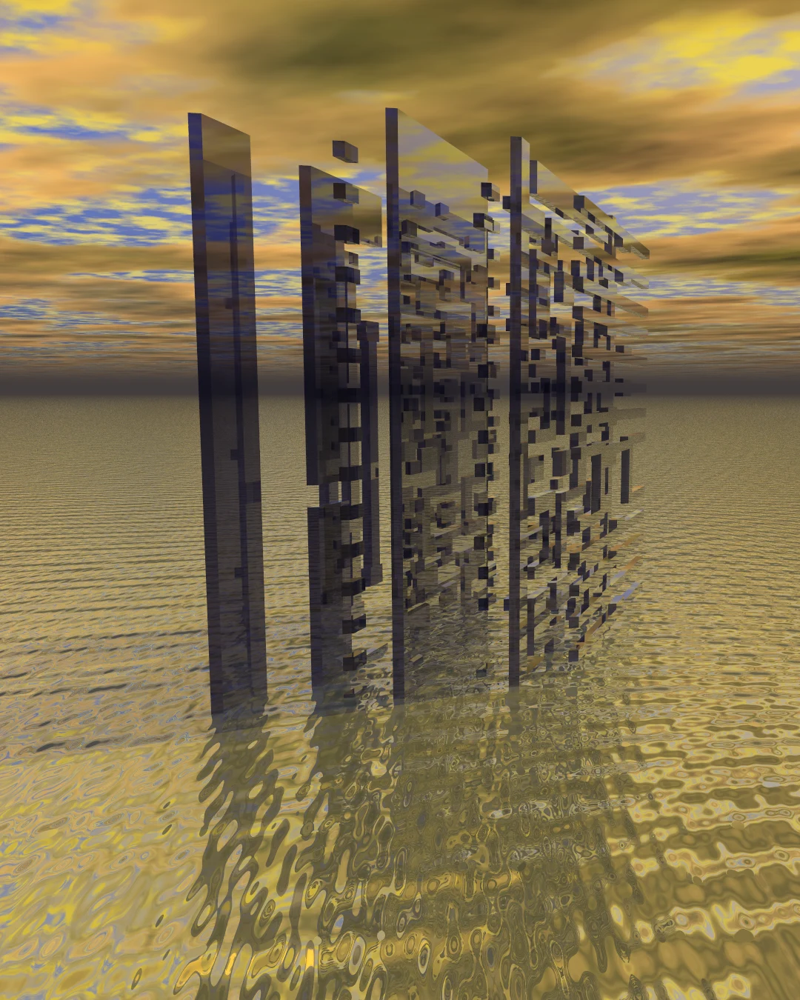
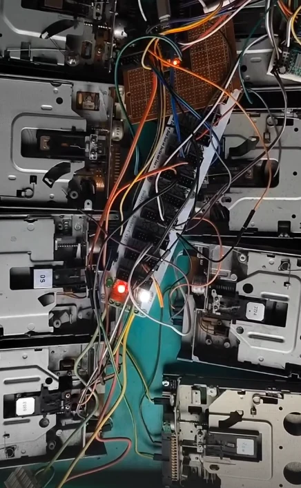
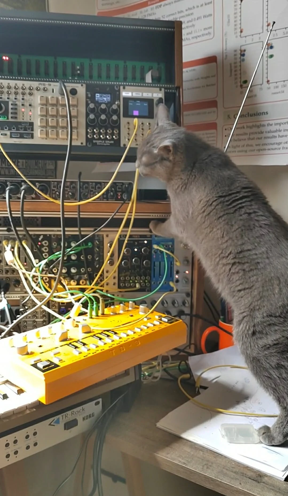
Crafting synthesizers
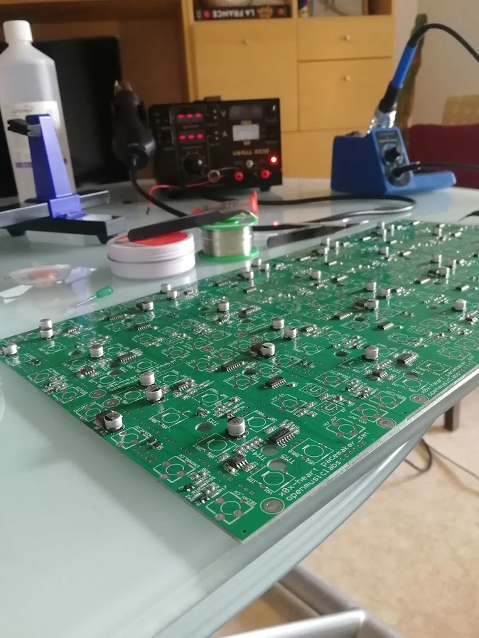
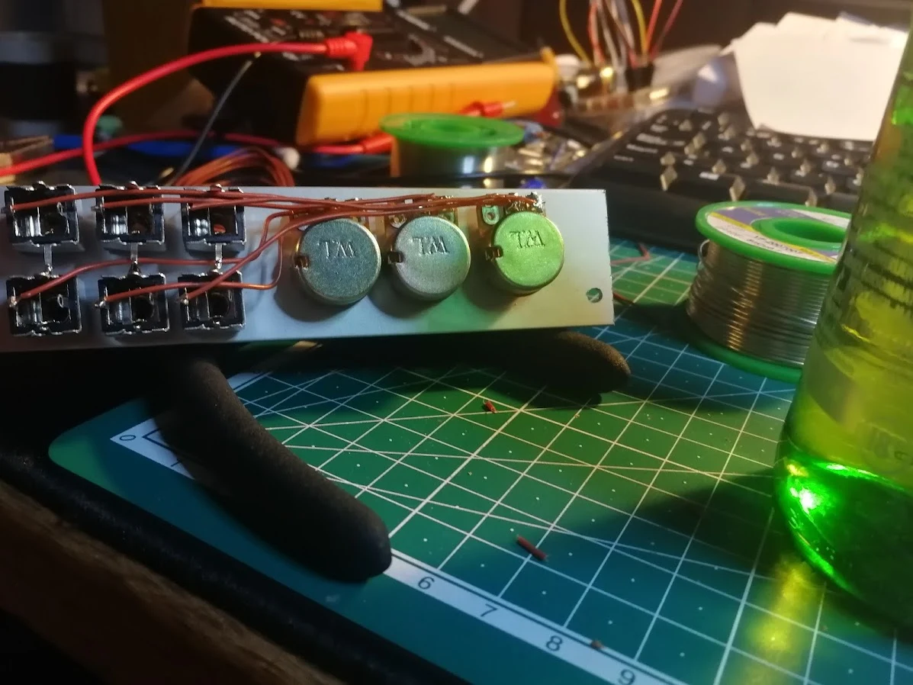
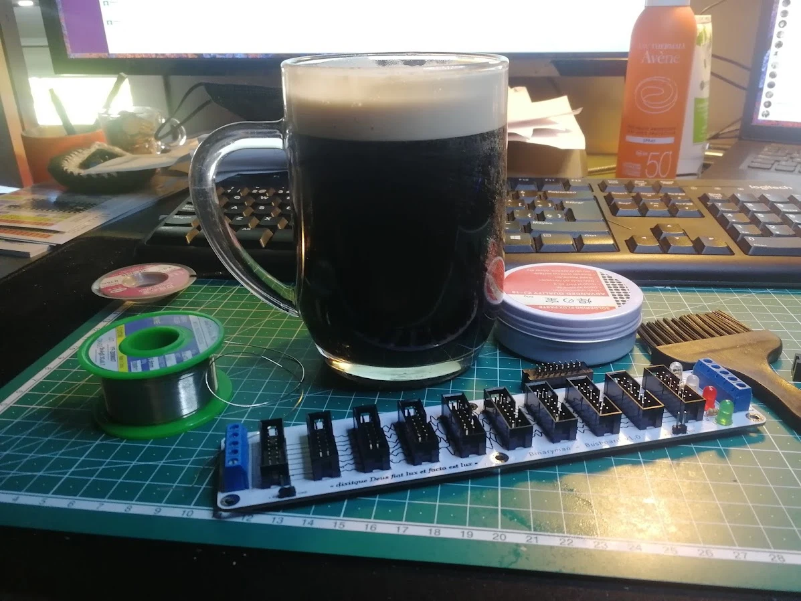
Crafting silicon
Why does everyone make them square?
MLIR
LLVM
OpenROAD placement as a visual medium.
From problems to electron flow
From pressure to specialization
This section explains why modern compiler techniques must reach into hardware.
Layers: follow arithmetic choices from programs toward circuits.
Scaling limits: understand why performance no longer arrives for free.
Specialization: connect GPUs, TPUs, and new number formats.
Arithmetic optimization spans the stack
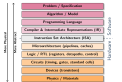
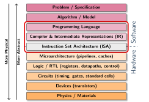
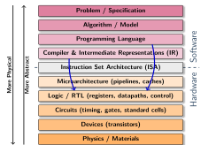
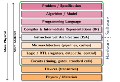
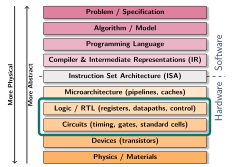
One problem, many representations
Each layer exposes different decisions.
Software and hardware are intertwined and multi-level.
1. Optimize a fixed machine
Algebraic simplification: \(x \times 1 \rightarrow x\).
Strength reduction: \(x \times 2 \rightarrow x \ll 1\).
Instruction selection: fused multiply-add.
A compiler usually sees a local window.
2. Build the machine
High-level synthesis crosses the ISA boundary.
Specialize operators: \(x^2\), \(x/3\).
Fuse operators and map them to LUTs or DSPs.
More hardware freedom means more opportunities.
3. Traverse the stack
MLIR dialects keep domain intent explicit.
Lowerings connect many domain-specific representations.
One infrastructure can move from problem to circuit.
MLIR offers a larger view.
This presentation lives here!
Logic / RTL: hardware structure, datapaths, and state.
Circuits: Boolean networks, synthesis, and cost.
Hands-on: lower arithmetic operations into explicit circuits.
The free speedups ended
Quiz time
Who has seen a version of this plot before?
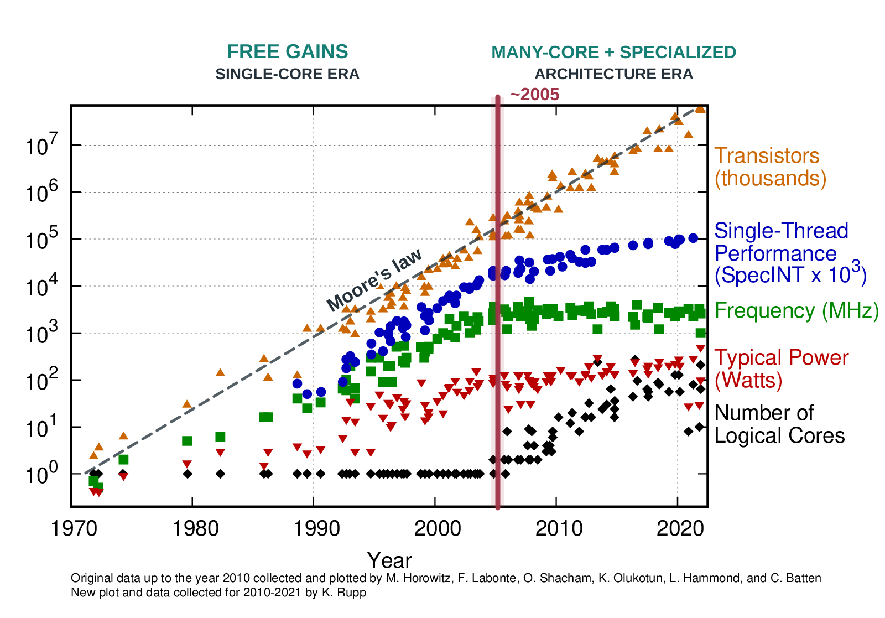
Fifty years of microprocessor trends. (Rupp 2022)
The free speedups ended
Fifty years of microprocessor trends. (Rupp 2022)
Quiz time
Who has heard these ADAges?
“Dark silicon era”
“Memory wall”
“Communication dominates arithmetic”
“End of the laws”
Some machines are experts at specialization
Quiz time
Who knows these machines?
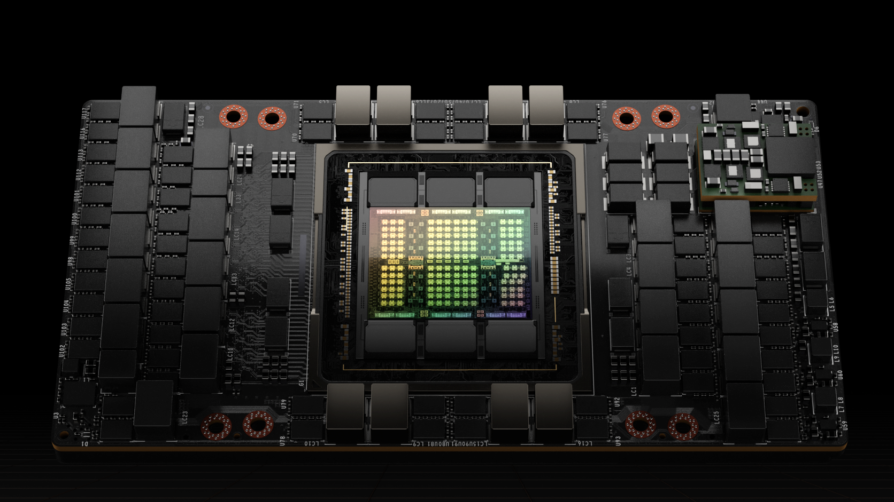
GPU: matrix-multiply instructions backed by dedicated Tensor Core hardware. (NVIDIA 2022)
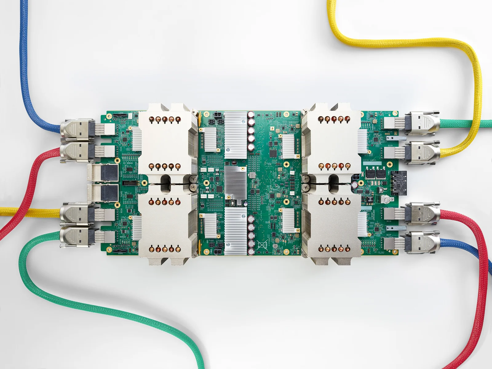
TPU: a processor built around matrix-multiply hardware. (Dean and Hölzle 2017; Jouppi et al. 2020)
Specialization puts more of the problem directly into the machine.
New accelerators, new compiler stacks: one origin of MLIR.
Promotion time!
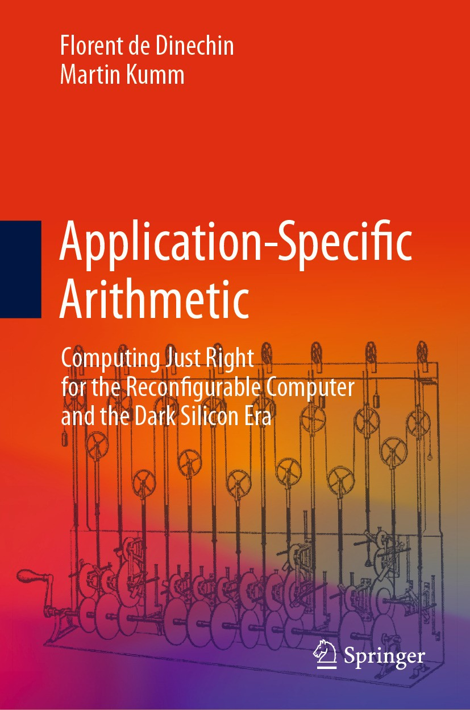
Emeraude, my INRIA team, works on:
- Arithmetic
- Audio compilation with Faust, including an LLVM backend
- Optimization
- FloPoCo: a C++ generator of VHDL for arithmetic circuits
-
HAriCo
[NEW]: a C++ IR-based circuit generator with MLIR connections
Today: MLIR + hardware design through arithmetic circuits.
Digital design primer
The digital-design primer
These concepts become CIRCT vocabulary in the next section.
Logic: combinational operations and bit widths.
Time: registers, clocks, and timing.
Structure: modules, instances, and repeated hardware.
Targets: FPGA fabrics and ASIC geometry.
Quiz time
Quick show of hands
Who has already:
- written VHDL;
- written Verilog or SystemVerilog;
- used an FPGA;
- seen an ASIC design flow?
Essential follow-up
Who has never heard any of those words?
So I know exactly how much to panic.
We will use tiny SystemVerilog examples only to make the hardware visible.
Combinational logic
Question
Which line runs first?
Neither line runs first.
- Both operators exist at the same time.
- The adder output settles after
productreaches it. - With no register, there is no stored state or clock cycle.
Compiler takeaway
Dependency analysis recovers the graph, independent of source order.
Bit widths: where does the carry go?
Question
For a = 15 and b = 1, what values reach wrapped and exact?
Registers: when does q change?
Question
This register samples d on a rising edge. If d changes between two edges, when can q change?
Basic D-Q flip-flop: sample d on each rising edge.
Falling-edge flip-flop: move the sampling instant.
Synchronous reset: observe reset on the clock edge.
Asynchronous, active-low reset: reset immediately when rst_n falls.
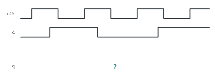
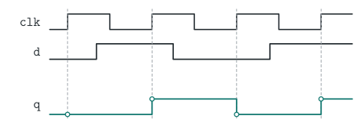
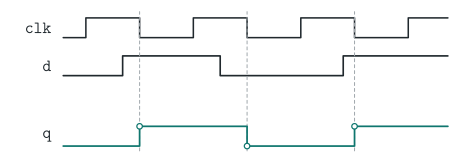
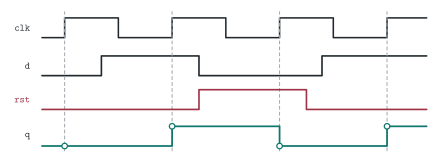
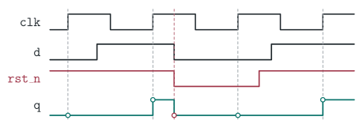
At the next rising edge. Between edges, q stores its previous value.
Changing posedge to negedge changes when the state may update.
Reset may assert between edges, but this flip-flop applies it only at the next rising edge.
Edge, reset timing, and reset polarity are hardware choices.
Compiler takeaway
Analyses can match these semantics to flip-flops in the target library.
Clock quiz: what does 2 GHz mean?
Question
A processor is clocked at 2 GHz. How much time separates two rising edges?
\[ T = \frac{1}{f} = \frac{1}{2\,\text{GHz}} = 0.5\,\text{ns} = \mathbf{500\,\text{ps}} \]
Example cell delays
- Sky130 HD
OR2_1: 61 / 189 ps (rise / fall). - Kintex-7
LUT6: 119 ps (no routing).
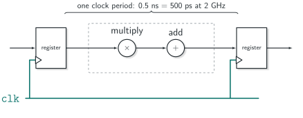
\[ t_{\text{clk} \rightarrow Q} + t_{\text{logic}} + t_{\text{routing}} + t_{\text{setup}} + t_{\text{skew}} < 500\,\text{ps} \]
The period is a budget for the longest register-to-register path.
Critical paths can be a compiler job
Compiler takeaway
Analyze the critical path \(\rightarrow\) insert registers \(\rightarrow\) balance stages.
Quiz: from function call to hardware
Question
Software calls a function. What is the equivalent mechanism in hardware?
Software: call a function. Hardware: instantiate a module.
mac4becomes a reusable hardware definition.u_mulnames this instance ofmul4.- Port connections become wires.
Compiler takeaway
A module hierarchy is a static instance graph that compiler analyses can traverse.
Build bottom-up
- Multiplier produces the wire
p: \(p = a \times b\) - MAC connects that same wire
pto its adder: \(y = p + c\) - Processing Element (PE): MAC + registers
- Array: many connected PEs
Each level reuses the one below it. The hierarchy is repeated structure, not a sequence of software calls.
Quiz: one Processing Element (PE), or nine?
Question
Nine calls to one Processing Element (PE), or nine independent PEs?
Nine independent PEs, operating in parallel.
generate repeats structure during elaboration, before the circuit operates.
Compiler takeaway
Analyses see nine connected PE instances, not a loop.
FPGA
Field-Programmable Gate Array
(the soft/easy hardware)
FPGA means configurable after manufacture
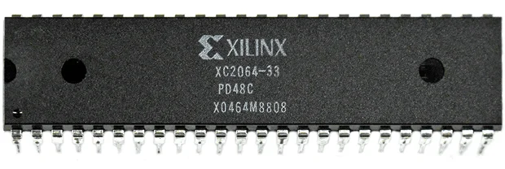
Field-programmable gate array
- The chip is manufactured first.
- Its logic and connections are configured later, in the field.
- 1985: Xilinx XC2064, one of the first commercial FPGAs.
- 64 configurable logic blocks, each containing two 3-input LUTs.
The same physical chip can implement many different digital circuits.
Quiz: which function is in this LUT?
Question
Which two-input gate is stored here?
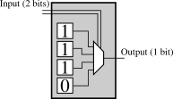
Truth table
a |
b |
stored output |
|---|---|---|
| 0 | 0 | 0 |
| 0 | 1 | 1 |
| 1 | 0 | 1 |
| 1 | 1 | 1 |
OR. A LUT2 stores \(2^2=4\) bits; a LUT6 stores \(2^6=64\) bits.
Quiz: what if six inputs are not enough?
Question
One LUT6 can see at most six inputs. How could the FPGA implement this seven-input OR?
Connect several LUTs. For example:
- one LUT computes
a | b | c | d | e | f; - another LUT combines that result with
g.
Compiler takeaway
Technology mapping decomposes logic into target LUTs.
Many LUTs become one larger circuit
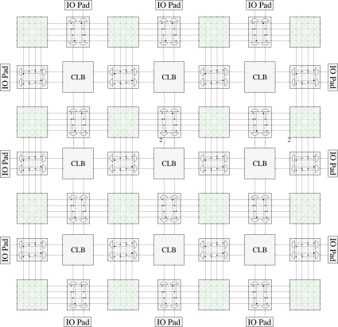
- CLBs: groups of LUTs and flip-flops
- Connection blocks: attach CLBs to routing tracks
- Switch blocks: join the selected tracks
- Hard blocks: DSPs and memories beside the fabric
Synthesis decomposes the function, placement chooses the resources, and routing connects them into one circuit.
A modern FPGA is enormous
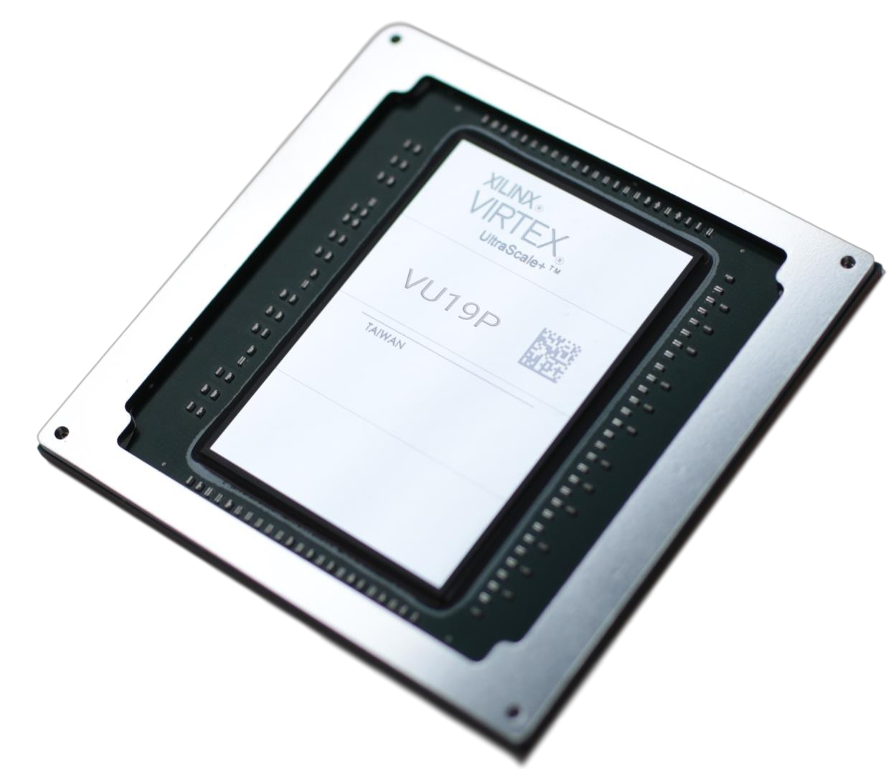
Virtex UltraScale+ VU19P
- 35 billion transistors
- 9 million system logic cells
- 2,072 user I/Os
- 80 high-speed transceivers
Millions of configurable resources, memories, DSPs, and wires become the circuit described by one bitstream.
Compiler takeaway
Compilation can take several days.
ASIC
Application-Specific Integrated Circuit
(the hard hardware)
Quiz: what are we looking at?
Question
What hardware object is shown here?
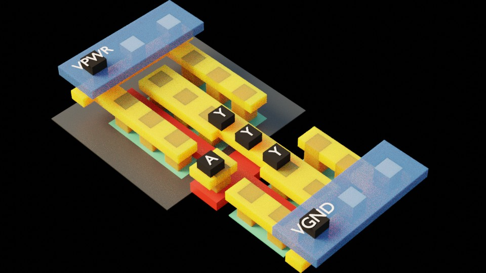
Look through the layers
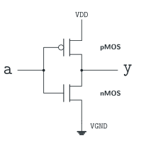
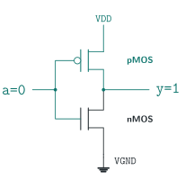
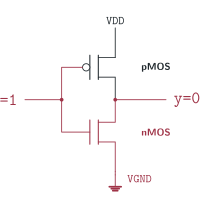
From geometry to logic (bottom-up)
Yes: this line.
From RTL to GDSII
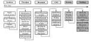
- Map RTL to logic cells.
- Floorplan and place them.
- Build the clock network.
- Route fixed metal wires.
- Verify and export GDSII.
RTL becomes geometry through a sequence of compiler passes and physical-design algorithms.
The best animation I have found for this part
If you want to build a real chip
They are friends: just knock on their doors. Cheap, modern paths to a real chip.
CIRCT: MLIR toward hardware
Can we do this with MLIR?
The highlighted core dialects match the concepts we just used:
hw: structure and hierarchycomb: combinational logicseq: state
Upstream (top): source/front-end, more abstract.
Downstream (bottom): HDL/back-end, closer to implementation.
CIRCT also contains other hardware dialects, transformations, analyses, and tools.
Next: use the tools.
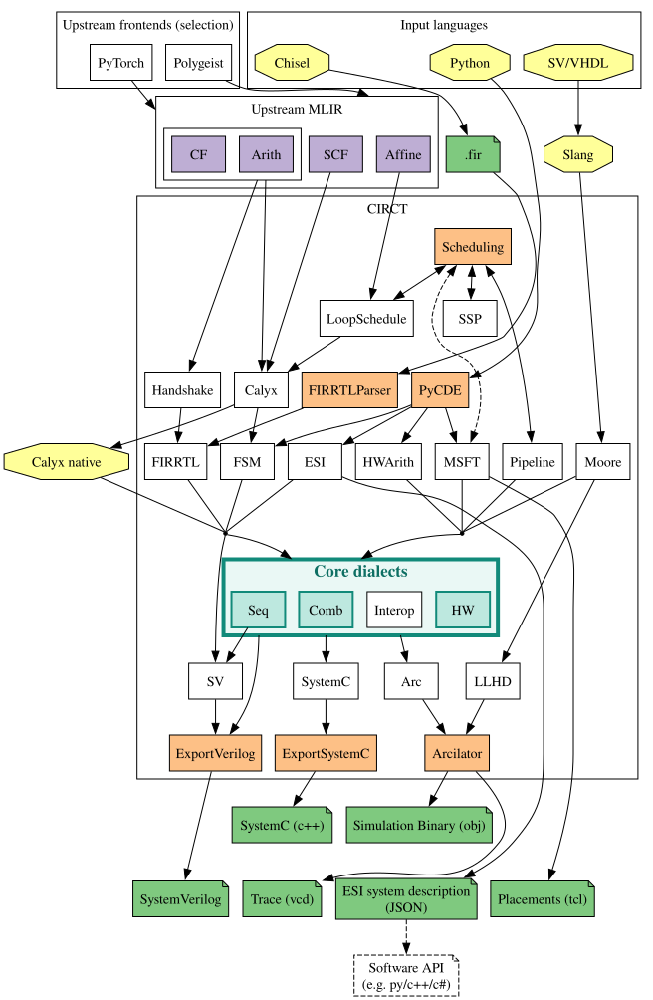
CIRCT in practice
The CIRCT tool tour
This section follows the ARITH 2026 CIRCT Tutorial by Samuel Coward and me.
Basics:
circt-verilog,circt-opt,circt-lec, andfirtool.Synthesis & Reports:
circt-synth, AIGER export, and area estimation.
Compiler explorers
Compiler Explorer (Godbolt)
CIRCT IR \(\rightarrow\) circt-opt \(\rightarrow\) transformed IR
Synth Explorer
RTL \(\rightarrow\) Yosys or Vivado \(\rightarrow\) schematic and reports
Useful for quick experiments. For the exercises, we use a pinned container.
Start the environment
Clone once, then enter the pre-built course image:
-v "$PWD:/workspace" shares the local folder: edit with your IDE, run in Docker. Use the mount on every docker run.
The same image can be built locally instead:
Tutorial Part 1: CIRCT basics
Exercise 1: Compile a SystemVerilog design to CIRCT IR. (\(\approx\) 3 min.)
Exercise 2: Narrow a combinational datapath with range analysis. (\(\approx\) 5 min.)
Exercise 3: Verify that a transformation preserved the circuit. (\(\approx\) 5 min.)
Exercise 4: Generate SystemVerilog for downstream EDA tools. (\(\approx\) 5 min.)
Exercise 1: compile the FMA example
First tool: circt-verilog parses SystemVerilog and prints CIRCT IR.
Let’s inspect the FMA module.
(SystemVerilog support remains an ongoing effort documented by Chips Alliance sv-tests.)
… and its MLIR/CIRCT counterpart
Exercise 1: compile the FMA example
Unlike C or SystemVerilog, comb does not implicitly promote arithmetic operands.
The operands and result of
comb.mulandcomb.addhave the same width.comb.concatmakes each extension explicit in the IR.A later analysis can therefore prove that those extra bits are unnecessary and narrow the circuit. (Exercise 2 ? Maybe ? Who knows ?)
Exercise 1: save the IR
Exercise 2: find the redundant bit
The imported IR uses i9 throughout the datapath. Before running a pass: how many bits can these values actually require?
| Value | Possible unsigned values | Required width |
|---|---|---|
%a, %b, %c |
\([0, 15]\) | 4 bits |
%a * %b |
\([0, 225]\) | 8 bits |
%a * %b + %c |
\([0, 240]\) | 8 bits |
The ninth bit belongs to the module interface, not to the internal arithmetic.
Exercise 2: read the narrowing contract
comb-int-range-narrowing makes that range argument mechanically:
def CombIntRangeNarrowing : Pass<"comb-int-range-narrowing"> {
let summary = "Reduce comb op bitwidth based on integer range analysis.";
let description = [{
Compute a basic value range analysis, by propagating integer intervals
through the domain.
The analysis is limited by a lack of sign-extension operator in the comb
dialect, leading to an over-approximation.
Particularly for signed arithmetic, a single interval is often an
over-approximation, a more precise analysis would require a union of
intervals.
}];
}For this zero-extended datapath, one interval per SSA value is precise enough; the signed-arithmetic limitation does not apply yet.
Exercise 2: run a deliberate pipeline
The order is intentional:
- Range narrowing rewrites operation widths and inserts
comb.extractorcomb.concatwhere narrow operations meet wider values. - Canonicalization cleans up the redundant structure exposed by that rewrite.
Exercise 2: inspect the transformed types
module {
hw.module @ex1_fma(
in %a : i4, in %b : i4, in %c : i4,
out d : i9) {
%false = hw.constant false
%c0_i4 = hw.constant 0 : i4
%0 = comb.concat %c0_i4, %a : i4, i4
%1 = comb.concat %c0_i4, %b : i4, i4
%2 = comb.mul %0, %1 : i8
%3 = comb.concat %c0_i4, %c : i4, i4
%4 = comb.add %2, %3 : i8
%5 = comb.concat %false, %4 : i1, i8
hw.output %5 : i9
}
}The multiply and add are now i8; the final zero-extension preserves the i9 module contract.
Exercise 2: make pass ordering observable
Now reverse the two passes:
Before reading the diff: will the semantics change? Will the operation count change? What single extra pass would recover the first output?
Answer: the arithmetic still narrows to i8, but late narrowing inserts comb.extract and comb.concat operations after canonicalization has already finished. The semantics are unchanged, the IR is larger, and a final --canonicalize recovers the first output.
Exercise 3: do you trust the transformation?
Of course, you do not trust research tools.
And industrial tools are always exact, except when their documentation lists IEEE-754 partial compliance and deviations.
CIRCT lets us mark our own homework with a logical equivalence checker: circt-lec.
Exercise 3: verify with circt-lec
Exercise 3: how does circt-lec work?
Quiz time
Who knows what a miter is?
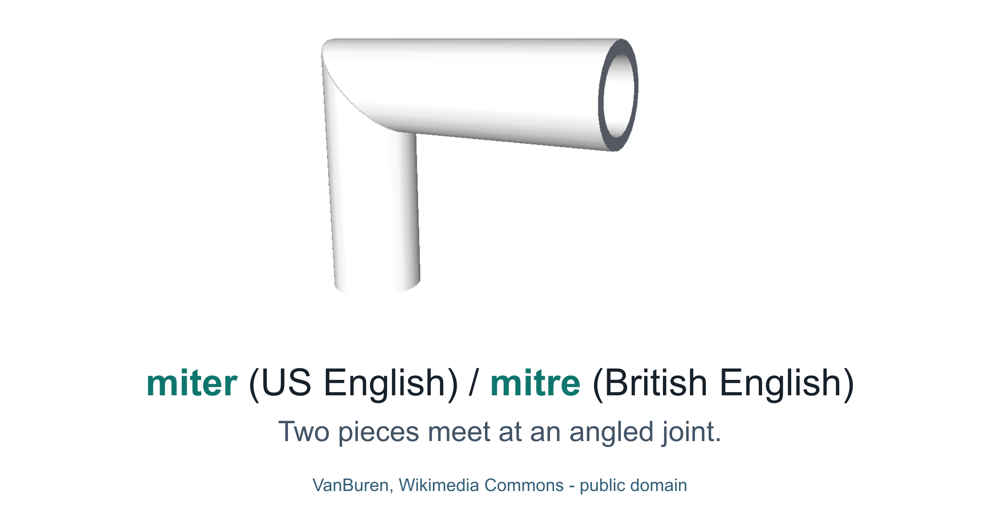
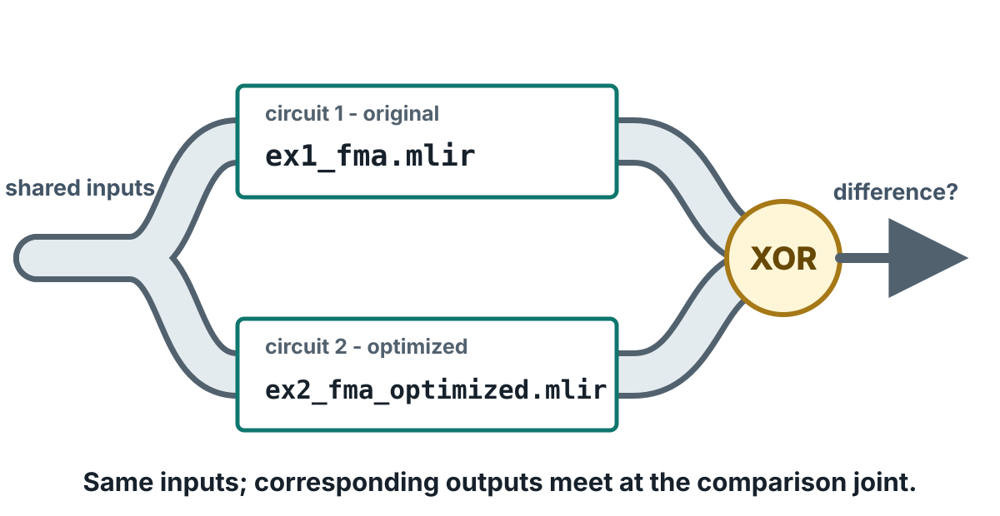
Construct a circuit miter: drive both circuits with the same inputs and compare their outputs.
Lower the miter and both circuits to SMT: Satisfiability Modulo Theories.
Ask Z3 (an SMT solver) whether an input can make the outputs differ.
unsatmeans there is no counterexample:c1 == c2.For our small circuits: same or not same :)
Exercise 3: break the circuit - 5 min
Introduce a functional bug while keeping the circuit valid and compilable. Then check that circt-lec reports c1 != c2.
Answer: Change the multiply to an add, alter a constant, or disconnect an operand. The current tool reports inequivalence but does not conveniently print the counterexample.
Exercise 4: generate SystemVerilog with firtool
A useful CIRCT flow is:
- Parse a SystemVerilog design into CIRCT IR.
- Optimize it with
circt-optand verify the transformations. - Emit Verilog with
firtoolfor downstream FPGA or ASIC tools.
rtl/ex2_fma_optimized.mlir is the output saved in Exercise 2.
Exercise 4: verify the round trip - 5 min
- Modify the
firtoolcommand to save the generated Verilog. - Compile that Verilog back to CIRCT IR with
circt-verilog. - Use
circt-lecto prove that the round trip preserved equivalence.
Tutorial Part 2: synthesis and reports
AIGs · equivalence · structural cost
Exercise 5: beat Sam’s circuit - 12 min
Two questions
- How many AIG nodes implement the circuit?
- How many logic levels are on its deepest path?
Sam’s baseline: 149 nodes, 13 levels. Can you reach 54 nodes, 8 levels?
What does circt-synth do?
Logic synthesis lowers operations such as adders and muxes into Boolean logic, then simplifies and shares that logic.
| Input | circt-synth |
Output |
|---|---|---|
hw modules + comb operations |
technology-independent synthesis | synth.aig network + reports |
It does not choose FPGA LUTs or ASIC cells, and it does not place or route them.
Quiz: can AND and inversion express OR?
Quiz
Can an OR gate be built using only AND and inversion?
The Boolean network is an AIG
An And-Inverter Graph (AIG) is a directed acyclic graph:
- vertices are two-input AND operations;
- an edge may invert its value;
- ports are graph inputs and outputs.
\[ a \lor b = \neg(\neg a \land \neg b) \]
AND and inversion can represent every Boolean function. (Mishchenko et al. 2006)
AIG is the graph; AIGER is a file
| AIG | AIGER |
|---|---|
| Boolean graph in CIRCT | format used to exchange that graph |
synth.aig operations |
ASCII or binary file |
built by circt-synth |
written by circt-translate |
firtool remains the tool used when the required output is Verilog.
Exercise 5: inspect the starting circuit
All operations are modulo \(2^8\).
This is a four-entry lookup table selected by a and b:
a |
b |
out |
|---|---|---|
| 0 | 0 | x |
| 0 | 1 | x + 1 |
| 1 | 0 | -(x + 1) |
| 1 | 1 | -x |
Exercise 5: simplify the four cases
All arithmetic is eight-bit modulo \(2^8\):
\[ -(x + 1) = \mathord{\sim}x \qquad -x = \mathord{\sim}x + 1 \]
Apply these identities to the two negative rows.
Original table
a |
b |
out |
|---|---|---|
| 0 | 0 | x |
| 0 | 1 | x + 1 |
| 1 | 0 | -(x + 1) |
| 1 | 1 | -x |
Simplified table
a |
b |
out |
|---|---|---|
| 0 | 0 | x |
| 0 | 1 | x + 1 |
| 1 | 0 | ~x |
| 1 | 1 | ~x + 1 |
Question
Which input selects x or ~x? Which input selects +0 or +1?
Exercise 5: combine the controls
Simplified behavior
a |
b |
out |
|---|---|---|
| 0 | 0 | x |
| 0 | 1 | x + 1 |
| 1 | 0 | ~x |
| 1 | 1 | ~x + 1 |
Question
How can a select x or ~x, while b selects +0 or +1?
1. Replicate a into an eight-bit mask
{8{a}} is 8'b00000000 when a = 0, and 8'b11111111 when a = 1.
2. Use XOR to select x or ~x
base = x ^ {8{a}}
3. Let b add zero or one
out = base + b
Exercise 5: compare both designs
The supplied script imports both designs, checks equivalence, lowers each one to an AIG, and reports node count and depth:
The optimization removes 95 AIG nodes and 5 logic levels without changing the function.
Let’s multiply
“Be fruitful, and multiply.”
The arithmetic hands-on
Pass: lower-e4m3fn-mul-to-comb
Implementation: scripts/lower-e4m3fn.py
Match one arith.mulf : f8E4M3FN island and replace it with a CIRCT comb datapath on i8 wires.
arith.mulf : f8E4M3FN \(\longrightarrow\) comb.extract, comb.mul, comb.add, comb.mux, comb.concat
Exercise 6 — baseline: lower integer
arith.muli, then expose the missing floating-point mapping.Exercise 7 — pass: construct the E4M3 datapath one rewrite step at a time, then exhaustively test the supported normal products.
Exercise 8 — specialization (optional): recognize
x * xand build a cheaper squarer.
Exercise 6: start from generic MLIR
Exercise 6: find the missing passes - 3 min
To reach that objective, two things must change:
func.funcandreturnmust become a hardware module boundary.arith.mulimust become a combinational multiplier.
Does upstream circt-opt provide both transformations?
Exercise 6: compose two passes
| File | Boundary | Multiplication |
|---|---|---|
ex6_arith_muli.mlir |
func.func |
arith.muli |
ex6_hw_arith.mlir |
hw.module |
arith.muli |
ex6_hw_comb.mlir |
hw.module |
comb.mul |
Boundary first; multiplication second.
Exercise 6: change the arithmetic contract
Run the same two-stage pipeline on examples/ex6_arith_mulf.mlir:
map-arith-to-comb draws a deliberate line
def MapArithToCombPass : Pass<"map-arith-to-comb"> {
let summary = "Map arith ops to combinational logic";
let description = [{
A pass which does a simple `arith` to `comb` mapping wherever possible.
This pass will not convert:
* floating point operations
* operations using `vector`-typed values
This does not intend to be the definitive lowering/HLS pass of `arith`
operations in CIRCT (hence the name "map" instead of e.g. "lower").
Rather, it provides a simple way (mostly for testing purposes) to map
`arith` operations.
}];
}CIRCT Transforms/Passes.td, pinned firtool-1.147.0 source
The failure is the documented boundary of the pass. Our exercise supplies one concrete floating-point lowering.
Read the type name: f8E4M3FN
| Part | Meaning |
|---|---|
f8 |
8-bit floating-point type |
E4 |
4 exponent bits |
M3 |
3 stored mantissa/fraction bits |
FN |
F = finite; N = NaN. No infinity encoding. |
Overflow therefore produces NaN instead of infinity.
Eight bits encode several numerical regimes
s
[7]
sign · 1 bit
eeee
[6:3]
biased exponent · 4 bits
mmm
[2:0]
stored fraction · 3 bits
| Regime | Encoding | Value |
|---|---|---|
| zero | e = 0000, m = 000 |
\(0\) |
| subnormal | e = 0000, m != 000 |
\((-1)^s 2^{-6}(m/8)\) |
| normal | e != 0000 |
\((-1)^s 2^{e-7}(1+m/8)\) |
| NaN | e = 1111, m = 111 |
not a number |
f8E4M3FN has bias 7, finite values up to 448, and no infinity. (Micikevicius et al. 2022)
Normal binades double; subnormals fill the gap
A binade \([2^k,2^{k+1})\) contains the values that share one exponent.
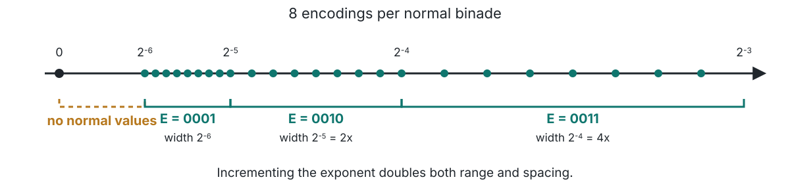
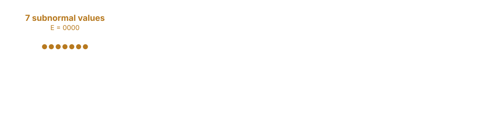
Subnormals make underflow gradual: seven values continue the smallest normal spacing toward zero, preserving nearby subtraction (Sterbenz’s lemma).
Exercise 7 keeps only the normal path. Many accelerators choose flush-to-zero: less shifting and control for AI workloads that tolerate tiny perturbations.
The same format spans tiny values to 448
| Hex | Fields s eeee mmm |
Value |
|---|---|---|
0x00 |
0 0000 000 |
0 |
0x08 |
0 0001 000 |
\(2^{-6}\) |
0x30 |
0 0110 000 |
0.5 |
0x38 |
0 0111 000 |
1 |
0x3C |
0 0111 100 |
1.5 |
0x41 |
0 1000 001 |
2.25 |
0x7E |
0 1111 110 |
448 |
0x7F |
0 1111 111 |
NaN |
Less precision buys a smaller representation and more operations per watt; the exact rounding and exceptional-value rules remain part of the contract.
Exercise cheat sheet
| I need to… | Use |
|---|---|
| Edit locally; run in Docker | docker run -it -v "$PWD:/workspace" ghcr.io/bynaryman/mlir-summer-school-2026-circt:latest |
| Build and run the supplied pipeline | ./scripts/build.sh && ./scripts/run.sh |
| SystemVerilog -> MLIR | circt-verilog in.sv -o out.mlir |
| Apply passes | circt-opt in.mlir --PASS -o out.mlir |
| MLIR -> SystemVerilog | firtool in.mlir -o out.sv |
| Prove equivalent | circt-lec --c1 TOP before.mlir --c2 TOP after.mlir |
| Compare synthesis statistics | ./scripts/compare-aig.py BEFORE.mlir AFTER.mlir TOP |
| Run the Python lowering | python scripts/lower-e4m3fn.py in.mlir -o out.mlir |
| Create XOR | x = comb.XorOp.create(a, b).result |
| Replace an operation | rewriter.replace_op(op, [value]) |
| Test the E4M3 normal path | ./scripts/test-e4m3-all.py --pass --normal-path |
Exercise 7: build an E4M3 multiplier
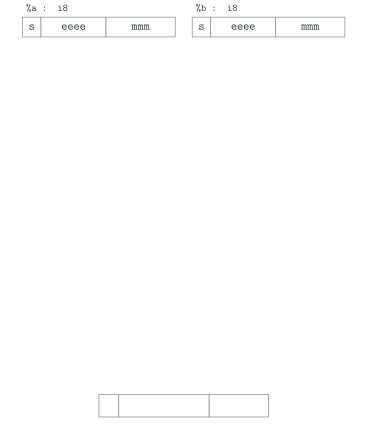
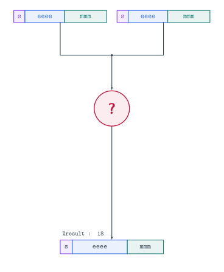
Root the rewrite at the final arith.bitcast: the matched island and its replacement then have the same i8 boundary.
Edit: scripts/lower-e4m3fn.py · Supplied: matcher, integer type aliases, and comb/hw builders · Scope: exact normal finite products; no rounding.
What must the circuit compute?
For a normal, finite value, let \(E\) be the stored exponent, \(B=7\), and \(M\) the significand:
\[x=(-1)^s\,2^{E-B}\,M, \qquad M=(1.\mathtt{mmm})_2\]
Multiplying two values exposes the three datapaths we must build:
\[ab= \underbrace{(-1)^{s_a\oplus s_b}}_{\text{sign}} \;\underbrace{2^{(E_a-B)+(E_b-B)}}_{\text{exponent}} \;\underbrace{(M_aM_b)}_{\text{significand}}\]
The significand product may need normalization; that correction is then added to the result exponent.
Together: route the sign
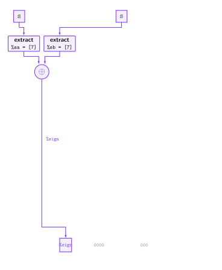
\[(-1)^{s_a}(-1)^{s_b}=(-1)^{s_a+s_b} \quad\Longrightarrow\quad s_r=s_a\oplus s_b\]
First make the rewrite compile. Extract both signs, XOR them, and set the remaining seven output bits to zero.
Sign path
The long purple wire is now a real SSA value from both inputs to the packed result.
Worked example: cumulative sign path
def lower_e4m3_mul(out_cast, rewriter):
matched = match_e4m3_island(out_cast)
if matched is None:
return True
lhs, rhs = matched
with rewriter.ip:
sa = comb.ExtractOp.create(7, i1, lhs).result
sb = comb.ExtractOp.create(7, i1, rhs).result
sign = comb.XorOp.create(sa, sb).result
zero7 = hw.ConstantOp.create(i7, 0).result
result = comb.ConcatOp.create(sign, zero7).result
rewriter.replace_op(out_cast, [result])
return FalseExercise 7A: multiply the significands - 6 min
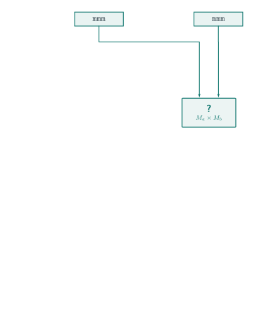
Normalized scientific notation keeps one non-zero digit before the point. In binary that digit can only be 1, so every normal significand is 1.mmm₂. Because this leading 1 is predictable, E4M3 stores only mmm.
\[M=1+\frac{(\mathtt{mmm})_2}{2^3}=(1.\mathtt{mmm})_2, \qquad \boxed{P=M_aM_b}\]
Your step: prepend the implicit 1, form both 4-bit significands, then produce the full-width %product : i8. comb.mul returns the operand width.
Exercise 7A: solution
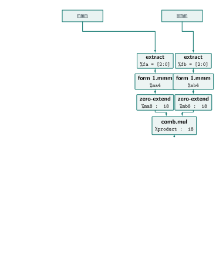
Reconstruct 1.mmm₂, zero-extend both 4-bit significands to the result width, then multiply them as integers.
\[M=1+\frac{(\mathtt{mmm})_2}{2^3}=(1.\mathtt{mmm})_2, \qquad P=M_aM_b\]
Solution
fa = comb.ExtractOp.create(0, i3, lhs).result
fb = comb.ExtractOp.create(0, i3, rhs).result
one = hw.ConstantOp.create(i1, 1).result
ma4 = comb.ConcatOp.create(one, fa).result
mb4 = comb.ConcatOp.create(one, fb).result
zero4 = hw.ConstantOp.create(i4, 0).result
ma8 = comb.ConcatOp.create(zero4, ma4).result
mb8 = comb.ConcatOp.create(zero4, mb4).result
product = comb.MulOp.create(ma8, mb8).resultExercise 7A: cumulative implementation
def lower_e4m3_mul(out_cast, rewriter):
matched = match_e4m3_island(out_cast)
if matched is None:
return True
lhs, rhs = matched
with rewriter.ip:
sa = comb.ExtractOp.create(7, i1, lhs).result
sb = comb.ExtractOp.create(7, i1, rhs).result
sign = comb.XorOp.create(sa, sb).result
fa = comb.ExtractOp.create(0, i3, lhs).result
fb = comb.ExtractOp.create(0, i3, rhs).result
one = hw.ConstantOp.create(i1, 1).result
ma4 = comb.ConcatOp.create(one, fa).result
mb4 = comb.ConcatOp.create(one, fb).result
zero4 = hw.ConstantOp.create(i4, 0).result
ma8 = comb.ConcatOp.create(zero4, ma4).result
mb8 = comb.ConcatOp.create(zero4, mb4).result
product = comb.MulOp.create(ma8, mb8).result
zero7 = hw.ConstantOp.create(i7, 0).result
result = comb.ConcatOp.create(sign, zero7).result
rewriter.replace_op(out_cast, [result])
return FalseOne bit chooses the normalization
Each reconstructed significand is in \([1,2)\), so their product is in \([1,4)\). Only two leading forms are possible:
| Product form | Test | Keep | Exponent |
|---|---|---|---|
1.xxxxxx₂ |
%product[7] = 0 |
%product[6:3] |
+ 0 |
10.xxxxx₂ |
%product[7] = 1 |
%product[7:4] |
+ 1 |
The 10.x…₂ case has two bits before the binary point; normalized form allows only 1.x…₂:
\[1.100_2 \times 1.100_2 = 10.010000_2 = 1.001000_2 \times 2^1\]
The shift restores 1.x…₂; incrementing the exponent preserves the value. Thus 0x3C × 0x3C produces 0x41 (\(2.25\)).
Exercise 7B: build the normalization mux - 7 min
\[n=\begin{cases}0 & P<2\\1 & P\ge 2\end{cases} \qquad M_r=P\,2^{-n}\]
The bit %product[7] distinguishes 1.x… from 10.x…. Use it to select the normalized window, then retain it as the exponent correction.
Your step: produce %frac : i3 and retain %norm : i1 for the exponent.
Exercise 7B: solution
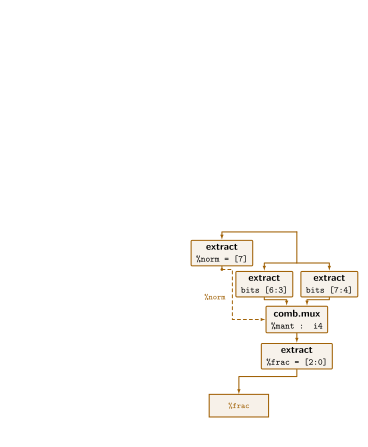
\[n=\begin{cases}0 & P<2\\1 & P\ge 2\end{cases} \qquad M_r=P\,2^{-n}\]
The bit %product[7] distinguishes 1.x… from 10.x…. Use it to select the normalized window, then retain it as the exponent correction.
Exercise 7B: cumulative implementation
def lower_e4m3_mul(out_cast, rewriter):
matched = match_e4m3_island(out_cast)
if matched is None:
return True
lhs, rhs = matched
with rewriter.ip:
sa = comb.ExtractOp.create(7, i1, lhs).result
sb = comb.ExtractOp.create(7, i1, rhs).result
sign = comb.XorOp.create(sa, sb).result
fa = comb.ExtractOp.create(0, i3, lhs).result
fb = comb.ExtractOp.create(0, i3, rhs).result
one = hw.ConstantOp.create(i1, 1).result
ma4 = comb.ConcatOp.create(one, fa).result
mb4 = comb.ConcatOp.create(one, fb).result
zero4 = hw.ConstantOp.create(i4, 0).result
ma8 = comb.ConcatOp.create(zero4, ma4).result
mb8 = comb.ConcatOp.create(zero4, mb4).result
product = comb.MulOp.create(ma8, mb8).result
norm = comb.ExtractOp.create(7, i1, product).result
direct = comb.ExtractOp.create(3, i4, product).result
shifted = comb.ExtractOp.create(4, i4, product).result
mant = comb.MuxOp.create(norm, shifted, direct).result
frac = comb.ExtractOp.create(0, i3, mant).result
result = comb.ConcatOp.create(sign, zero4, frac).result
rewriter.replace_op(out_cast, [result])
return FalseWhy subtract only one bias?
Let \(E\) be the stored exponent field and \(B=7\) its bias. The exponent used by the real value is \(e=E-B\).
\[\begin{aligned} e_r &= (E_a-B)+(E_b-B)+n \\ E_r &= e_r+B \\ &= E_a+E_b-B+n \end{aligned}\]
Adding the two stored fields counts the bias twice. Encoding the result adds one bias back, so the circuit subtracts only one bias overall.
Together: adjust the exponent
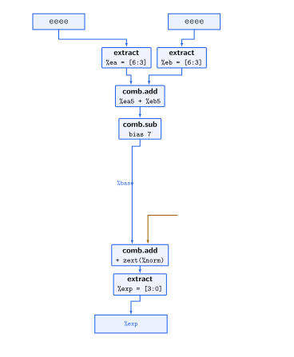
\[E_r=E_a+E_b-7+n\]
Use five-bit intermediates to preserve the carry while adding the stored exponents, removing one bias, and applying the normalization correction.
Exponent path
ea = comb.ExtractOp.create(3, i4, lhs).result
eb = comb.ExtractOp.create(3, i4, rhs).result
zero1 = hw.ConstantOp.create(i1, 0).result
ea5 = comb.ConcatOp.create(zero1, ea).result
eb5 = comb.ConcatOp.create(zero1, eb).result
sum_ = comb.AddOp.create(ea5, eb5).result
bias = hw.ConstantOp.create(i5, 7).result
base = comb.SubOp.create(sum_, bias).result
norm5 = comb.ConcatOp.create(zero4, norm).result
adjusted = comb.AddOp.create(base, norm5).result
exp = comb.ExtractOp.create(0, i4, adjusted).resultTogether: cumulative exponent path
def lower_e4m3_mul(out_cast, rewriter):
matched = match_e4m3_island(out_cast)
if matched is None:
return True
lhs, rhs = matched
with rewriter.ip:
sa = comb.ExtractOp.create(7, i1, lhs).result
sb = comb.ExtractOp.create(7, i1, rhs).result
sign = comb.XorOp.create(sa, sb).result
fa = comb.ExtractOp.create(0, i3, lhs).result
fb = comb.ExtractOp.create(0, i3, rhs).result
one = hw.ConstantOp.create(i1, 1).result
ma4 = comb.ConcatOp.create(one, fa).result
mb4 = comb.ConcatOp.create(one, fb).result
zero4 = hw.ConstantOp.create(i4, 0).result
ma8 = comb.ConcatOp.create(zero4, ma4).result
mb8 = comb.ConcatOp.create(zero4, mb4).result
product = comb.MulOp.create(ma8, mb8).result
norm = comb.ExtractOp.create(7, i1, product).result
direct = comb.ExtractOp.create(3, i4, product).result
shifted = comb.ExtractOp.create(4, i4, product).result
mant = comb.MuxOp.create(norm, shifted, direct).result
frac = comb.ExtractOp.create(0, i3, mant).result
ea = comb.ExtractOp.create(3, i4, lhs).result
eb = comb.ExtractOp.create(3, i4, rhs).result
zero1 = hw.ConstantOp.create(i1, 0).result
ea5 = comb.ConcatOp.create(zero1, ea).result
eb5 = comb.ConcatOp.create(zero1, eb).result
sum_ = comb.AddOp.create(ea5, eb5).result
bias = hw.ConstantOp.create(i5, 7).result
base = comb.SubOp.create(sum_, bias).result
norm5 = comb.ConcatOp.create(zero4, norm).result
adjusted = comb.AddOp.create(base, norm5).result
exp = comb.ExtractOp.create(0, i4, adjusted).result
result = comb.ConcatOp.create(sign, exp, frac).result
rewriter.replace_op(out_cast, [result])
return FalseTogether: pack and replace
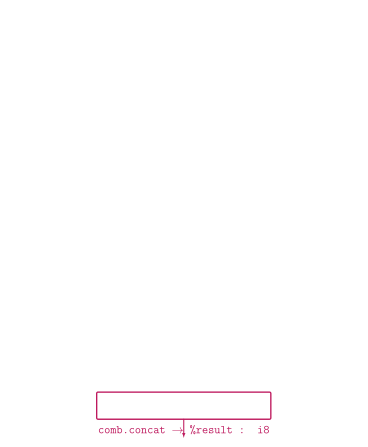
The final value has the same i8 type as the output bitcast being replaced.
\[R=\{s,e,f\}\qquad\text{(Verilog notation)}\]
Finish the callback
The floating-point island is dead; the greedy rewrite removes it.
Complete normal-path lowering
def lower_e4m3_mul(out_cast, rewriter):
matched = match_e4m3_island(out_cast)
if matched is None:
return True
lhs, rhs = matched
with rewriter.ip:
sa = comb.ExtractOp.create(7, i1, lhs).result
sb = comb.ExtractOp.create(7, i1, rhs).result
sign = comb.XorOp.create(sa, sb).result
fa = comb.ExtractOp.create(0, i3, lhs).result
fb = comb.ExtractOp.create(0, i3, rhs).result
one = hw.ConstantOp.create(i1, 1).result
ma4 = comb.ConcatOp.create(one, fa).result
mb4 = comb.ConcatOp.create(one, fb).result
zero4 = hw.ConstantOp.create(i4, 0).result
ma8 = comb.ConcatOp.create(zero4, ma4).result
mb8 = comb.ConcatOp.create(zero4, mb4).result
product = comb.MulOp.create(ma8, mb8).result
norm = comb.ExtractOp.create(7, i1, product).result
direct = comb.ExtractOp.create(3, i4, product).result
shifted = comb.ExtractOp.create(4, i4, product).result
mant = comb.MuxOp.create(norm, shifted, direct).result
frac = comb.ExtractOp.create(0, i3, mant).result
ea = comb.ExtractOp.create(3, i4, lhs).result
eb = comb.ExtractOp.create(3, i4, rhs).result
zero1 = hw.ConstantOp.create(i1, 0).result
ea5 = comb.ConcatOp.create(zero1, ea).result
eb5 = comb.ConcatOp.create(zero1, eb).result
sum_ = comb.AddOp.create(ea5, eb5).result
bias = hw.ConstantOp.create(i5, 7).result
base = comb.SubOp.create(sum_, bias).result
norm5 = comb.ConcatOp.create(zero4, norm).result
adjusted = comb.AddOp.create(base, norm5).result
exp = comb.ExtractOp.create(0, i4, adjusted).result
result = comb.ConcatOp.create(sign, exp, frac).result
rewriter.replace_op(out_cast, [result])
return False
patterns.add(arith.BitcastOp, lower_e4m3_mul)What did we implement?
| Scope | Input pairs |
|---|---|
| every E4M3 bit pattern | 65,536 |
| normal \(\times\) normal | 56,644 |
| exact simplified path | 11,892 |
The checker keeps products that:
- use normal finite operands;
- stay in the normal exponent range;
- need no rounding.
It excludes zero, subnormals, overflow, NaN, and inexact products.
Our circuit implements a useful subset, not the complete E4M3FN contract.
A complete E4M3FN multiplier
Quiz: should %x * %x cost the same?
What becomes simpler when both SSA operands are identical?
- \(s_x \oplus s_x = 0\): the normal finite result is positive.
- \(E_x + E_x = 2E_x\): one exponent is decoded and doubled.
- The significand partial-product matrix is symmetric.
The product matrix contains repeated work
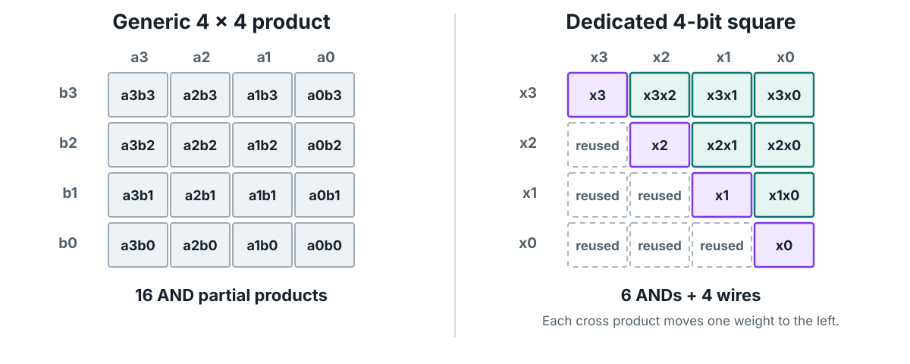
For a square, the lower triangle duplicates the upper triangle and the diagonal does not require an AND gate (Dinechin and Kumm 2024, sec. 14.2).
Why the significand squarer is cheaper
For \(X=\sum_i 2^i x_i\):
\[ X^2 = \sum_i 2^{2i}x_i + \sum_{j<i} 2^{i+j+1}x_ix_j \]
- Diagonal: \(x_i x_i=x_i\), so it is a wire.
- Mirror: \(x_ix_j=x_jx_i\), so compute the pair once and shift its weight.
- Four bits: 16 generic partial products become 6 ANDs and 4 wires.
The bit complexity is roughly halved before compression and rounding. The floating-point normalization and exceptional-value policy remain.
Exercise 8: use the stronger pattern first
The generic multiplier pattern also matches %x * %x. For this exercise, run the dedicated square lowering first:
In a combined production pass, the square rewrite would receive the higher PatternBenefit.
Exercise 8: working intermediate
The supplied script already specializes the outer floating-point structure:
Only the significand still uses a generic multiplier:
The intermediate is valid and testable before students edit anything.
Exercise 8: replace one helper - 12 min
Edit only build_square4 in scripts/lower-e4m3fn-square.py:
- Route each diagonal bit \(x_i\) to weight \(2i\).
- Compute each cross product \(x_ix_j\) once for \(j<i\).
- Place it at weight \(i+j+1\) and add the terms.
Then regenerate the specialized circuit:
Exercise 8: solution
For each input bit \(x_i\):
- route \(x_i\) directly to bit position \(2i\);
- compute \(x_i x_j\) once for every \(j<i\);
- place that cross product at bit position \(i+j+1\).
The loop describes the bit heap. Constant shifts become wiring, and the generic comb.add network can be compressed by synthesis.
def build_square4(x):
bits = [
comb.ExtractOp.create(i, i1, x).result
for i in range(4)
]
zero7 = hw.ConstantOp.create(i7, 0).result
def at_weight(bit, weight):
wide = comb.ConcatOp.create(zero7, bit).result
shift = hw.ConstantOp.create(i8, weight).result
return comb.ShlOp.create(wide, shift).result
terms = [at_weight(bits[i], 2 * i) for i in range(4)]
for i in range(4):
for j in range(i):
cross = comb.AndOp.create(bits[i], bits[j]).result
terms.append(at_weight(cross, i + j + 1))
return comb.AddOp.create(*terms).resultExercise 8: prove, then measure
Generate the generic Exercise 7 baseline:
Compare it with the specialized circuit:
| Lowering checkpoint | AIG nodes | Levels |
|---|---|---|
| generic Exercise 7 multiplier | 57 | 14 |
| supplied square intermediate | 51 | 14 |
| dedicated significand squarer | 50 | 13 |
Match more intent; build better datapaths
The same rewrite strategy extends beyond one squarer:
| Recognized arithmetic | Possible datapath |
|---|---|
%x * %x |
dedicated squarer |
%x * C |
constant multiplier or shift-add network |
%a * %b + %c |
fused multiply-add with one final rounding |
| \(\sum_i x_i^2\) | fused sum-of-squares datapath |
| dot product or polynomial | target-sized fused operator |
MLIR preserves enough intent to recognize the pattern; CIRCT lets the pass materialize the chosen circuit. This is the bridge to higher-level hardware generation.
What to keep from this session
hw,comb, andseqpreserve hardware structure, dataflow, and state.A lowering is an architecture choice: one operation can become many circuits.
Prove behavior first; then compare Boolean structure and physical cost.
MLIR and CIRCT make that design loop programmable.
Preserve intent long enough to choose the circuit deliberately.
Bonus: HLS with MLIR and CIRCT
Progressive Arithmetic Lowering from Tensor Kernels to Synthesizable Datapaths
Louis Ledoux
Pierre Cochard
Florent de Dinechin
Progressive Arithmetic Lowering from Tensor Kernels to Synthesizable Datapaths
MLIR Workshop @ Euro LLVM Developers’ Meeting
13 April 2026
Motivation: AI
class LlamaFfnSublayer(nn.Module):
"""Llama FFN sublayer using SwiGLU."""
def __init__(
self,
dim: int = 512,
hidden_dim: int | None = None,
multiple_of: int = 256,
):
super().__init__()
if hidden_dim is None:
hidden_dim = 4 * dim
hidden_dim = int(2 * hidden_dim / 3)
hidden_dim = multiple_of * (
(hidden_dim + multiple_of - 1)
)
self.w_gate = nn.Linear(dim, hidden_dim, bias=False)
self.w_up = nn.Linear(dim, hidden_dim, bias=False)
self.w_down = nn.Linear(hidden_dim, dim, bias=False)
def forward(self, x: torch.Tensor) -> torch.Tensor:
gate = F.silu(self.w_gate(x))
up = self.w_up(x)
return self.w_down(gate * up)
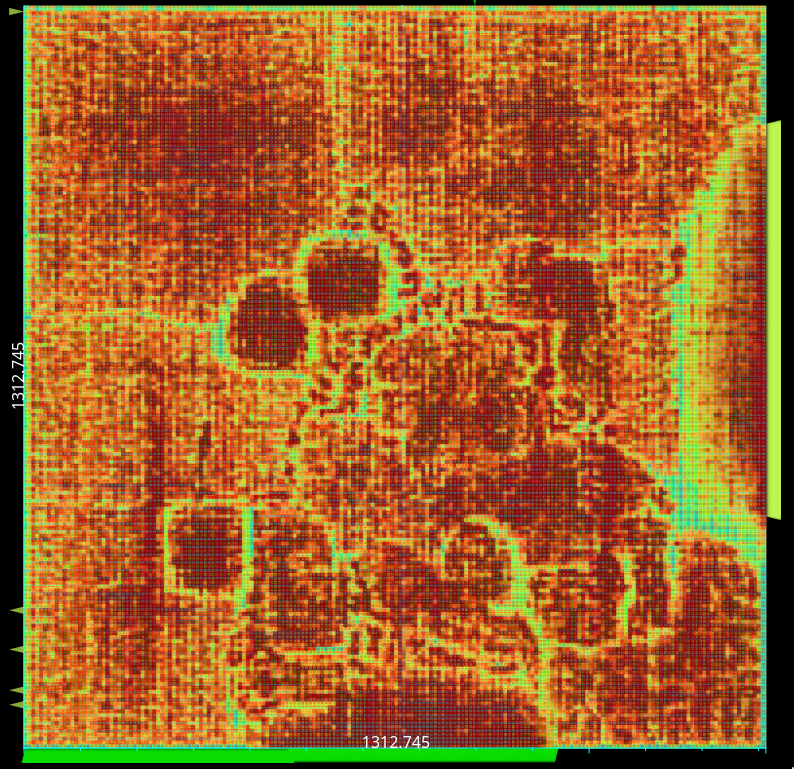
Llama ASIC routing
Motivation: Audio DSP
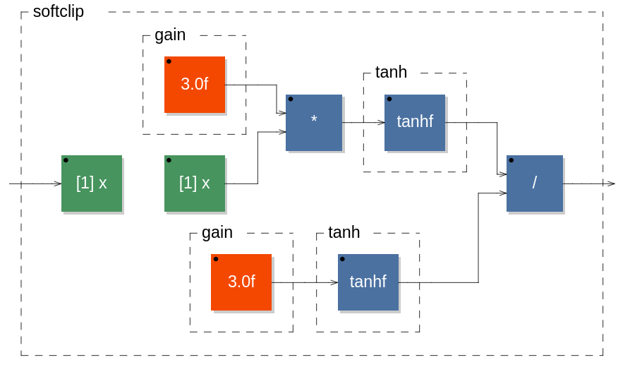
TinyTapeout GF0P02 wafer.space
Problem to silicon crosses many intermediate arithmetic levels.
Emeraude-MLIR
Our take on the end-to-end levels
Motivations at both ends: frontends and backends
Frontends on one hand
- FIR / IIR recurrences on sample streams
- Fixed-point friendly audio kernels
- Nonlinear audio functions: saturation, waveshaping, modal/finite-difference-time-domain physical modelling
- Precision control: range, quantization, overflow
- Tensor contractions: (
matmul, batched GEMM) - Nonlinear kernels: SiLU / exp / sigmoid / softmax
- Accumulation depth: rounding-error growth
- Precision control: mixed-precision per layer
Arithmetic motivations of different natures
Backends on the other hand
PPA objectives: area, power, performance…
… or budgets / constraints
- Resource budgets: LUT, FF, BRAM, DSP
- Reconfigurable
- Throughput-oriented
- Standard cells (Resizing)
- Process Design Kit
- 7nm, 180nm, corners, high density
- Physical constraints: congestion, wiring
- DRC/LVS and signoff requirements
Hardware constraints of different natures
High-level math on tensors
Polynomial approximations
RealArithandFixedPointArith.--realarith-to-fixed_pt_arithfor polynomial approximation lowering.- Horner Scheme
2 × degree-16
32 × degree-4
Example 1: \(f(x)=\tanh(3x)/\tanh(3)\)
--realarith-to-fixed_pt_arith="approximation-method=uniform_piecewise_poly polynomial-degree=10 coeff-storage=switch"
index_switch: 8 intervals (cases 0..7)
4256867)h + -57922167)h + -191490613)h + 5510525043)h + 5640589127
\(\left[\ldots\right]\)
-170708)h + 1874477)h + -15214840)h + 81733304)h + 30216113779

EuroLLVM 2025 poster
https://hal.science/hal-05063466
Example on an LLM subkernel
High-level optimization potential:
linear algebra kernels & nonlinear functions.
Medium-level arith on SCF and memrefs
The gap from MLIR to CIRCT
Approaches in the literature
- ScaleHLS / StreamTensor [1][2]
- Dynamatic [3]
- BASE2 [4]
Final floating-point implementation is delegated to vendor HLS or IP/core generators.
“float and double … are synthesized with IEEE-754 standard partial compliance.”
“complies with much of the IEEE-754 Standard … deviations generally provide a better trade-off of resources.”
[1] Ye et al., HPCA 2022 · [2] Ye & Chen, MICRO 2025 · [3] Xu et al., FPGA 2023 · [4] Friebel et al., HEART 2023
Partial compliance + hidden vendor IP ⇒ opaque arithmetic behavior and limited control.
Low-level datapaths with comb, seq, and HW
Comb/seq and cost estimation
- CIRCT Core: Comb/Seq/HW
- Cost modeling
- AIG, MIG, High-Level Heuristics
- Avoid commiting to hardware
- Native AIG export:
circt-translate <synth.mlir> --export-aiger -o 90-final.aig - Fallback AIG export:
hls-driver/scripts/export-aig-via-yosys-abc.sh <circt-opt> <in.mlir> 90-final.aig forward - PPA in seconds
- Preparing QoR / DSE
module {
hw.module @forward(in %arg0 : !hw.array<16xi32>, in %arg1 : !hw.array<16xi32>, in %clk : !seq.clock, in %reset : i1, out arg1_out : !hw.array<16xi32>) {
...
%111 = comb.extract %local_mem_2_rdata from 31 : (i32) -> i1
%112 = comb.extract %local_mem_3_rdata from 31 : (i32) -> i1
%113 = comb.xor %111, %112 : i1
%114 = comb.extract %local_mem_2_rdata from 23 : (i32) -> i8
%115 = comb.extract %local_mem_3_rdata from 23 : (i32) -> i8
%118 = comb.concat %c1_i25, %116 : i25, i23
%120 = comb.mul %118, %119 : i48
%123 = comb.add %114, %115, %122, %c-127_i8 : i8
...
}
}module forward(
input [15:0][31:0] arg0,
arg1,
input clk,
reset,
output [15:0][31:0] arg1_out
);
wire [511:0] _GEN_57 = arg0;
reg [31:0] arg1_mem[0:15];
always_ff @(posedge clk) begin
if (!reset) begin
if (_GEN_5) arg1_mem[_GEN_1] <= _GEN_0;
if (_GEN_9) arg1_mem[_GEN_6] <= 32'h0;
end
end
...
endmoduleHAriCo
Introducing HAriCo (Hardware Arithmetic Cores)
- IR-based FloPoCo implementation
- Modernized C++ API
- Multiple outputs
- VHDL, SystemVerilog, MLIR, …
- Conversion & transformation passes
- C API (Python, Rust bindings)
- Big code-base (approx. 90 operators)
- (will take time…)
HAriCo input IR
Three materialization strategies
- IEEE754-compliant
- 1 Operation → 1 Operator
- N Operations → N Roundings
- FMA philosophy
- 1 deferred rounding
- Expression fusion
\[ \frac{1}{\sqrt{x^2+y^2}} \qquad \sin(\omega t + \varphi) \]
- Squarers [1]
- Constant multipliers [2]
- Kulisch / Systolic Arrays [3]
- Target semantics
From MLIR to CIRCT: harico-arith-to-comb
- IEEE754-compliant
- 1 Operation → 1 Operator
- N Operations → N Roundings
emeraude-mlir-opt in.mlir --harico-arith-to-comb="lowering-mode=per-op target=VirtexUltraScale target-frequency=2.5e7"
- FMA philosophy
- 1 deferred rounding
- Expression fusion
\[ \frac{1}{\sqrt{x^2+y^2}} \qquad \sin(\omega t + \varphi) \]
emeraude-mlir-opt in.mlir --harico-arith-to-comb="lowering-mode=fused-graph-datapath target=sky130 target-frequency=2.5e7"
- Squarers
- Constant multipliers
- Kulisch / Systolic Arrays
- Target semantics
emeraude-mlir-opt in.mlir --harico-arith-to-comb="lowering-mode=specialized specializations=enable=s3fdp,s3fdp.chunk_size=32,s3fdp.ovf=10,s3fdp.msb=10,s3fdp.lsb=-20 target=tsmc7 target-frequency=2.5e7"
HAriCo C++ API example
#include <HAriCo/Context.hpp>
#include <HAriCo/Operators/FPAddSinglePath.hpp>
using namespace HAriCo;
auto ctx = Context::new_default();
ctx.options["target"] = Targets::VirtexUltraScalePlus;
ctx.options["frequency"] = 500 // MHz;
// Build operator:
auto op = FPAdd();
auto options = op.interface(ctx);
options["wE"] = 8;
options["wF"] = 23;
Module mod = op.build(ctx, options);
// Before pass:
VerilogCodeGenerator gen;
gen.build(mod).fwrite("fpadd.sv");
PassManager pm;
pm.add<TimingAnalysisPass>();
pm.add<SchedulePass>();
pm.add<PipelineizePass>();
pm.run(mod);
gen.build(mod).fwrite("fpadd_pipeline.sv");
HAriCo Python bindings example
import harico as hrc
def main():
ctx = hrc.Context()
ctx.set_target("VirtexUltrascalePlus", frequency_mhz=500)
op = hrc.Operator("FPAdd")
mod = op.build_ir(
ctx,
wE=8,
wF=23,
sub=False,
dualPath=False,
onlyPositiveIO=False,
)
# Before pass:
mod.emit_vhdl("fpadd_before_pipelineize.vhd")
mod.emit_verilog("fpadd_before_pipelineize.v")
# Analysis passes first:
pm_analysis = hrc.PassManager(["timing", "schedule"])
pm_analysis.run(mod, ctx)
# Transform pass:
pm_pipelineize = hrc.PassManager(["pipelineize"])
pm_pipelineize.run(mod, ctx)
Results: DSP
Wafer.space run
MPW + TT submission (TTg0p2) on Wafer.space — Utilisation 47.106% · Wire length 377542 um
GDS 3D view
Reticle view (wafer.space)
Results: LLM and HAriCo lowering strategies
ASIC: GDS routing congestion
ASIC SKY130HD Llama
| Metric | Value |
|---|---|
| Area | 1.7233 mm² |
| Die Dimensions | 1.312 × 1.312 mm |
| Power Breakdown | |
| Combinational | 0.117 W |
| Sequential | 0.044 W |
| Clock | 0.028 W |
| Total Power | 0.189 W |
Llama 1.5 mm² routing congestion heatmap
FPGA: resource usage
FPGA VU19P Llama
| Metric | Value |
|---|---|
| LUTs | 26,928 |
| Flip-Flops | 12,221 |
| DSP Blocks | 17 |
Llama FPGA vu19p P&R
Llama FFN sublayer
module {
func.func @forward(%arg0: tensor<1x2x8xf32>) -> tensor<1x2x8xf32> {
%7 = linalg.batch_matmul ... -> tensor<1x2x16xf32>
%8 = linalg.generic ... ins(%7 : tensor<1x2x16xf32>) outs(%5 : tensor<1x2x16xf32>) {
^bb0(%in: f32, %out: f32):
%neg = arith.negf %in : f32
%exp = math.exp %neg : f32
%gate = arith.divf %cst_1, %den : f32
%silu = arith.mulf %in, %gate : f32
linalg.yield %silu : f32
} -> tensor<1x2x16xf32>
return %18 : tensor<1x2x8xf32>
}
}Llama FFN Sublayer. Area vs. Delay
MatMul + SiLU
#map = affine_map<(d0, d1) -> (d0, d1)>
module {
func.func @forward(%arg0: tensor<2x4xf32>) -> tensor<2x4xf32> {
%mm = linalg.matmul ... -> tensor<2x4xf32>
%sig = linalg.generic ... ins(%mm : tensor<2x4xf32>) outs(%empty : tensor<2x4xf32>) {
^bb0(%in: f32, %acc: f32):
%neg = arith.negf %in : f32
%exp = math.exp %neg : f32
%gate = arith.divf %c1, %den : f32
linalg.yield %gate : f32
} -> tensor<2x4xf32>
%out = linalg.generic ... ins(%sig, %mm : tensor<2x4xf32>, tensor<2x4xf32>) outs(%empty : tensor<2x4xf32>)
return %out : tensor<2x4xf32>
}
}MatMul + SiLU. Area vs. Delay
MatMul + sigmoid
#map = affine_map<(d0, d1) -> (d0, d1)>
module {
func.func @forward(%arg0: tensor<2x4xf32>) -> tensor<2x4xf32> {
%mm = linalg.matmul ... -> tensor<2x4xf32>
%out = linalg.generic ... ins(%mm : tensor<2x4xf32>) outs(%empty : tensor<2x4xf32>) {
^bb0(%in: f32, %acc: f32):
%neg = arith.negf %in : f32
%exp = math.exp %neg : f32
%sig = arith.divf %c1, %den : f32
linalg.yield %sig : f32
} -> tensor<2x4xf32>
return %out : tensor<2x4xf32>
}
}MatMul + Sigmoid. Area vs. Delay
Attention softmax exponential
#map = affine_map<(d0, d1) -> (d0, d1)>
module {
func.func @forward(%query: tensor<2x4xf32>) -> tensor<2x2xf32> {
%score = linalg.matmul ... -> tensor<2x2xf32>
%out = linalg.generic ... ins(%score : tensor<2x2xf32>) outs(%out_empty : tensor<2x2xf32>) {
^bb0(%in: f32, %acc: f32):
%res = math.exp %in : f32
linalg.yield %res : f32
} -> tensor<2x2xf32>
return %out : tensor<2x2xf32>
}
}Attention Softmax Exponential. Area vs. Delay
MatMul + sigmoid heavy-tail
#map = affine_map<(d0, d1) -> (d0, d1)>
module {
func.func @forward(%arg0: tensor<2x8xf32>) -> tensor<2x8xf32> {
%mm = linalg.matmul ... -> tensor<2x8xf32>
%out = linalg.generic ... ins(%mm : tensor<2x8xf32>) outs(%empty : tensor<2x8xf32>) {
^bb0(%in: f32, %acc: f32):
%neg = arith.negf %in : f32
%exp = math.exp %neg : f32
%res = arith.divf %c1, %den : f32
linalg.yield %res : f32
} -> tensor<2x8xf32>
return %out : tensor<2x8xf32>
}
}MatMul + Sigmoid Heavy-Tail. Area vs. Delay
GEMV accumulation
module {
func.func @forward(%arg0: tensor<1x4xf32>) -> tensor<1x4xf32> {
%w = arith.constant dense<...> : tensor<4x4xf32>
%init = linalg.fill ins(%c0 : f32) outs(%empty : tensor<1x4xf32>) -> tensor<1x4xf32>
%out = linalg.matmul ins(%arg0, %w : tensor<1x4xf32>, tensor<4x4xf32>) outs(%init : tensor<1x4xf32>)
-> tensor<1x4xf32>
return %out : tensor<1x4xf32>
}
}GEMV Accumulation. Area vs. Delay
Attention score
module {
func.func @forward(%query: tensor<2x4xf32>) -> tensor<2x2xf32> {
%kt = arith.constant dense<...> : tensor<4x2xf32>
%init = linalg.fill ins(%c0 : f32) outs(%empty : tensor<2x2xf32>) -> tensor<2x2xf32>
%score = linalg.matmul ins(%query, %kt : tensor<2x4xf32>, tensor<4x2xf32>) outs(%init : tensor<2x2xf32>)
-> tensor<2x2xf32>
return %score : tensor<2x2xf32>
}
}Attention Score. Area vs. Delay
MatMul accumulation
module {
func.func @forward(%arg0: tensor<2x4xf32>) -> tensor<2x4xf32> {
%w = arith.constant dense<...> : tensor<4x4xf32>
%init = linalg.fill ins(%c0 : f32) outs(%empty : tensor<2x4xf32>) -> tensor<2x4xf32>
%mm = linalg.matmul ins(%arg0, %w : tensor<2x4xf32>, tensor<4x4xf32>) outs(%init : tensor<2x4xf32>)
-> tensor<2x4xf32>
return %mm : tensor<2x4xf32>
}
}MatMul Accumulation. Area vs. Delay
Polybench GESUMMV-like
#map = affine_map<(d0, d1) -> (d0, d1)>
module {
func.func @forward(%arg0: tensor<1x4xf32>) -> tensor<1x4xf32> {
%mm = linalg.matmul ... -> tensor<1x4xf32>
%out = linalg.generic ... ins(%mm, %arg0 : tensor<1x4xf32>, tensor<1x4xf32>) outs(%empty_out : tensor<1x4xf32>) {
^bb0(%mmv: f32, %in: f32, %acc: f32):
%bias = arith.mulf %beta, %in : f32
%res = arith.addf %mmv, %bias : f32
linalg.yield %res : f32
} -> tensor<1x4xf32>
return %out : tensor<1x4xf32>
}
}Polybench GESUMMV-Like. Area vs. Delay
DSP FIR accumulation
module {
func.func @forward(%arg0: tensor<1x8xf32>) -> tensor<1x8xf32> {
%w = arith.constant dense<...> : tensor<8x8xf32>
%init = linalg.fill ins(%c0 : f32) outs(%empty : tensor<1x8xf32>) -> tensor<1x8xf32>
%mm = linalg.matmul ins(%arg0, %w : tensor<1x8xf32>, tensor<8x8xf32>) outs(%init : tensor<1x8xf32>)
-> tensor<1x8xf32>
return %mm : tensor<1x8xf32>
}
}DSP FIR Accumulation. Area vs. Delay
Polybench SYRK-like
module {
func.func @forward(%arg0: tensor<1x8xf32>) -> tensor<1x8xf32> {
%w = arith.constant dense<...> : tensor<8x8xf32>
%init = linalg.fill ins(%c0 : f32) outs(%empty : tensor<1x8xf32>) -> tensor<1x8xf32>
%mm = linalg.matmul ins(%arg0, %w : tensor<1x8xf32>, tensor<8x8xf32>) outs(%init : tensor<1x8xf32>)
-> tensor<1x8xf32>
return %mm : tensor<1x8xf32>
}
}Polybench SYRK-Like. Area vs. Delay
Closing
CIRCT / LLVM commits
Internal Emeraude-MLIR transforms pushed upstream.
Concluding remarks and future work
- High level: broaden the polynomial approximation schemes.
- Middle level: recognize and fuse more arithmetic patterns.
- Low level: schedule comb graphs and materialize bit heaps.
- Close the loop with cost models and design-space exploration.1 2
- Upstream reusable components and open the research prototype.
- Connect frontend, arithmetic, CIRCT, and EDA communities through explicit IR contracts.
1 Hanchen Ye et al., “ScaleHLS: A New Scalable High-Level Synthesis Framework on Multi-Level Intermediate Representation,” HPCA 2022.
2 Hanchen Ye and Deming Chen, “StreamTensor: Make Tensors Stream in Dataflow Accelerators for LLMs,” MICRO 2025.
Demo time :)
I will just execute a command while speaking
Thank you
Thank you
Q&A
Bibliography
- F. de Dinechin and M. Kumm, Application-Specific Arithmetic. Springer.
- B. Barbe, L. Ledoux, A. Volkova, and F. de Dinechin, “Reconfigurable constant multipliers: Hardware models, optimization algorithm and applications,” Microprocessors and Microsystems, p. 105270, 2026. doi:10.1016/j.micpro.2026.105270.
- L. Ledoux and M. Casas, “An Open-Source Framework for Efficient Numerically-Tailored Computations,” in 2023 33rd International Conference on Field-Programmable Logic and Applications (FPL), 2023, pp. 19–26. doi:10.1109/FPL60245.2023.00011.
- H. Ye et al., “ScaleHLS: A New Scalable High-Level Synthesis Framework on Multi-Level Intermediate Representation,” in 2022 IEEE International Symposium on High-Performance Computer Architecture (HPCA), 2022, pp. 741–755.
Bibliography
- H. Ye et al., “ScaleHLS: A New Scalable High-Level Synthesis Framework on Multi-Level Intermediate Representation,” in 2022 IEEE International Symposium on High-Performance Computer Architecture (HPCA), 2022, pp. 741–755. doi:10.1109/HPCA53966.2022.00060.
- H. Ye and D. Chen, “StreamTensor: Make Tensors Stream in Dataflow Accelerators for LLMs,” in Proceedings of the 58th IEEE/ACM International Symposium on Microarchitecture, MICRO ’25, Association for Computing Machinery, 2025, pp. 201–216. doi:10.1145/3725843.3762817.
Appendix
GDS cell usage
| Category | Cells | Count |
|---|---|---|
| Fill | fillcap fill |
10280 |
| NAND | nand2 nand4 nand3 |
2627 |
| Combo Logic | aoi21 oai21 oai22 oai31 aoi211 oai211 aoi22 oai32 oai221 aoi221 oai33 |
1645 |
| Buffer | clkbuf dlyb buf dlya |
1258 |
| Flip Flops | dffq |
1179 |
| NOR | nor2 nor4 nor3 xnor2 xnor3 |
1024 |
| OR | or2 or3 or4 xor2 xor3 |
1020 |
| Clock | clkinv |
367 |
| AND | and2 and3 and4 |
323 |
| Multiplexer | mux2 |
316 |
| Inverter | inv |
55 |
The complete precheck runs in GitHub Actions.
GDS precheck results
| Check | Result |
|---|---|
| Magic DRC | ✓ |
| KLayout pin label overlapping drawing | ✓ |
| KLayout zero area | ✓ |
| KLayout Checks | ✓ |
| Pin check | ✓ |
| Boundary check | ✓ |
| Power pin check | ✓ |
| Layer check | ✓ |
| Cell name check | ✓ |
| Analog pin check | ✓ |
Many transforms from one Faust line of code passing all checks :)